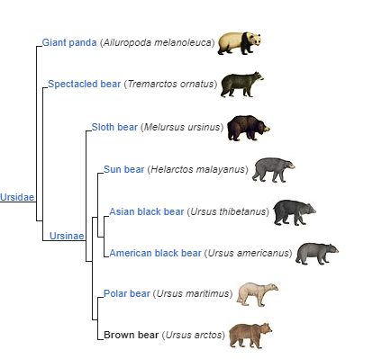
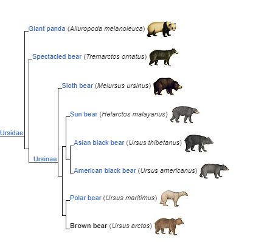

The brown bear (Ursus arctos) is a large bear species found across Eurasia and North America It is one of the largest living terrestrial members of the order Carnivora, rivaled in size only by its closest relative The brown bear's range includes parts of Russia, Central Asia, the Himalayas, China, Canada, the United States, Hokkaido, Scandinavia, Finland, the Balkans, the Picos de Europa and the Carpathian region (especially Romania), Iran, Anatolia, and the Caucasus. The brown bear is recognized as a national and state animal in several European countries. In North America, the populations of brown bears are called grizzly bears, while the subspecies that inhabits the Kodiak Islands of Alaska is known as the Kodiak bear
Learn morehear are some bear specise:
the following countries have the largest populations of brown bears
 
